Horizon_Arm 用户指南¶
使用用已安装的程序（exe）完成连接、控制与标定。
注：图片可右键放大查看；任何界面按空格键触发"全局急停"。
使用建议¶
- ❓ 遇到问题：优先查看 故障排除
- 📚 完整学习：按顺序阅读本指南章节
- 🔍 快速查找：使用
Ctrl+F搜索关键词
⚠️ 重要提示：首次使用前，请务必查看"电机参数设置"中的"6轴运动方向参考标准"，确保各轴运动方向与仿真系统一致。如发现方向不对，请及时调整电机方向参数。
⚠️ 重要安全注意事项¶
机械臂断电操作规范¶
禁止操作：
机械臂在通电运行状态下，严禁直接拔掉基座后面的电源线。工作环境应保持整洁，避免因拉扯、拖拽导致电源线意外脱落。
非正常断电的严重后果：
-
机械臂末端砸落
瞬间断电会导致机械臂失去动力支撑，末端会因重力快速下坠，极易砸坏相机、夹爪等精密模块。 -
回零参数异常
瞬时断电可能导致机械臂回零参数丢失或错乱，重新通电后回零位置可能偏离标准位置，影响后续操作精度。 -
电源系统故障
非正常断电可能导致各轴电机的供电逻辑异常，电机会错误地将内部电池识别为主要电源，即使重新通电，机械臂仍处于失能状态。此时需要手动拆开各轴外壳，逐个重新插拔电池才能恢复正常。
正确断电流程：
- 扶住机身：断电前用手扶住机械臂，防止失能后砸落
- 手动关闭开关：在基座后面手动关闭电源开关
- 确认断电：等待指示灯熄灭，确认完全断电
💡 温馨提示：
养成良好的断电习惯，可以有效延长机械臂使用寿命，避免不必要的维修成本。
售后说明：
因人为操作不当（如非正常断电、暴力操作等）导致的机械臂末端夹爪、相机或机械臂整体部件损坏，不受理退货，仅支持自费维修。
如果出现通电机械臂无法直立，查看第四周电机后盖指示灯-绿-常亮，此时就要重新插拔电池，那几轴有问题就重新插拔那几轴的电池，具体电机电池位置参考图。

电机位置特写图
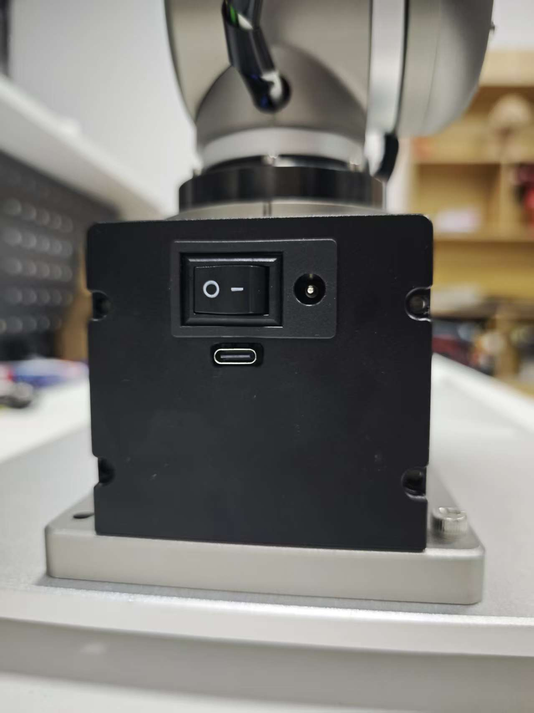
基座开关
1. 许可证与激活¶
首次激活¶
激活步骤
-
启动程序：双击桌面"Horizon_Arm"图标，弹出激活窗口
-
输入信息：
- 序列号：你收到的唯一序列号
- 用户标识：手机号或邮箱
-
点击激活：点击"立即激活"按钮
-
激活成功：显示"激活成功"后关闭窗口
（首次激活将在打开软件时进行，如选择关闭激活窗口以及选择不激活将无法正常使用本软件）

首次激活演示
激活状态¶
状态类型
-
已激活：显示"已激活（本机）"，无需再次操作
-
未激活：显示"未激活，请输入序列号"，按上述步骤激活
-
设备超限：显示"设备数量已达上限"，联系管理员处理
-
已锁定（销毁）：显示"序列号已锁定（已销毁）"，该序列号已永久失效
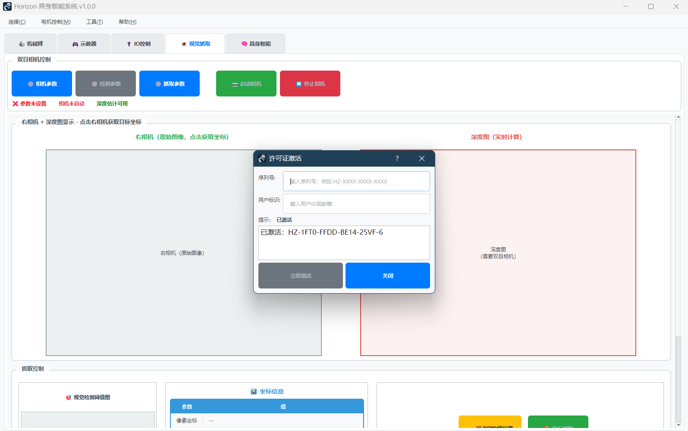
激活状态查看
离线使用¶
使用说明 - 首次激活成功后，系统会在本机保存激活凭据 - 之后即使没有网络也可以正常启动和使用 - 序列号具有唯一性，不可复制或多设备共享
销毁锁定说明¶
含义 - 销毁锁定为不可逆操作，被执行后序列号永久禁用
锁定后影响 - 本机离线凭据在后续启动校验时失效 - 任意设备均无法再激活该序列号
注意 - 如需迁移/交接许可证，请先联系管理员合规处理，避免误销毁
**注意**：激活需要网络连接，激活成功后可离线使用
2. 开始之前¶
准备工作¶
版本区分
-
驱动板绿灯常亮的是 X 版
-
驱动板绿灯每间隔1秒闪烁的是 Y 版
-
两版在同步、回零、到位确认等细节略有不同
本系统默认使用Y版
系统要求
-
电脑：Windows 10/11（64 位）
-
设备：USB 转 CAN（如 CANable，SLCAN 协议）
接线要求 - 确保 CAN_H/CAN_L 正确连接 - 电机上电且 ID 唯一（1~255）
3. 安装与启动¶
安装步骤¶
1. 运行安装包 - 按照向导完成安装
2. 启动程序 - 桌面双击 "Horizon_Arm" 图标启动程序
3. 进入主界面 - 程序启动后进入主界面

Horizon_Arm 具身智能系统界面
4. 第一次连接电机（最重要）¶
连接配置¶
访问入口 - 菜单：连接 → 连接电机
基本设置 - 设置串口参数 - 配置波特率 - 选择"驱动板版本 X/Y" - 系统自动匹配合适的回零与同步方式
连接模式 - 单电机模式 - 双电机模式 - 机械臂模式 - 自定义 ID 配置
X/Y 板操作对照¶
差异速览表
| 操作项 | X 板 | Y 板 |
|---|---|---|
| 同步位置/速度/梯形 | 同步标志 + 广播触发 | 多电机命令一次性下发 |
| 批量回零 | 4 种模式 | 6 种模式（含绝对零点/掉电位置） |
| 多机读取实时角度 | 逐台读取 | 支持 0x36 一次性读取 |
| 到位确认/超时提示 | 按常规返回 | 运动类仅地址1确认；默认不等待以避免超时提示 |
| 修改电机 ID | 支持 | 支持（AE 4B；可选存储） |
4.1 连接步骤¶
1. 打开菜单"连接 → 连接电机"
2. 在弹出的对话框中设置
- 串口：选择实际端口，如
COM8 - 波特率：保持
500000（与驱动板配置一致） - 电机 ID：
- 可点"单电机(ID=1) / 双电机(1,2) / 机械臂(1..6)"快速填入
- 或在"自定义ID"里输入，如
1,2,3,4,5,6
3. 点击"确定"
- 系统将逐一连接每个 ID
- 并验证能否读取状态
4. 成功后确认
- 状态栏显示"已连接 X 个电机"
- 所有控制功能页面自动激活，可开始控制

连接电机操作
4.2 遇到失败时¶
常见原因 - 串口占用 - 波特率/CAN 速率不匹配 - 电机未上电 - ID 错误
提示会列出失败的 ID 与错误详情。

常见错误-串口选错
断开连接 - 菜单"连接 → 断开连接" - 断开所有电机连接
5. 界面与功能导航¶
主界面布局¶
标签页功能 - 🦾 机械臂控制 - 🎮 示教器 - 👁️ 视觉抓取 - 🧠 具身智能 - 🔌 IO控制
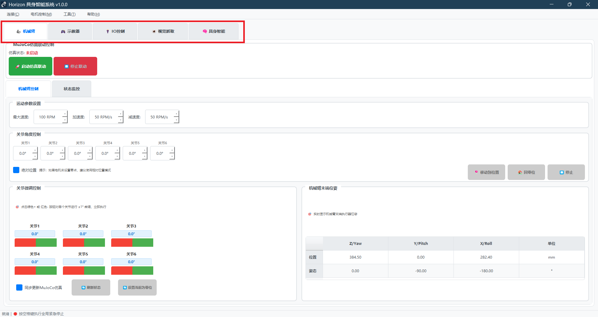
标签页
菜单功能（独立窗口） - 单电机控制（Ctrl+1） - 多电机控制（Ctrl+2）
工具菜单 - 手眼标定 - 相机标定 - 电机参数设置 - 夹爪连接
连接电机后，所有控制功能会自动激活并可以正常使用。
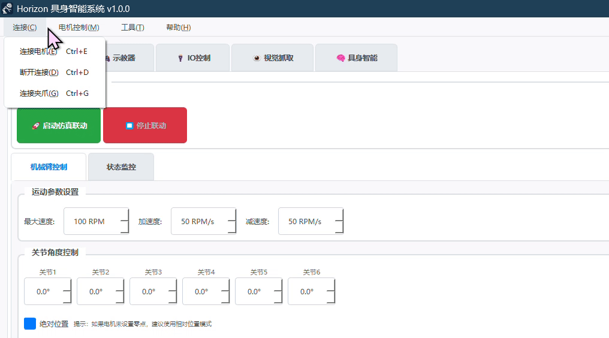
顶部工具
6. 机械臂控制¶
整体控制¶
适合 6 关节机械臂的整体控制。
连接状态 - 连接成功后，机械臂控制功能自动激活 - 断开连接后，控制功能暂停使用
主要功能 - 关节控制：可以单独控制 6 个关节的角度 - 整体运动：输入目标角度后，所有关节协调运动到目标位置 - 参数重载：修改电机参数后，点击"重新加载配置"使新参数生效
机械臂设置¶
运动参数配置 - 最大速度设置 - 加速度参数调整 - 减速度参数配置
关节微调功能 - 每个关节 ±1° 即时执行 - 便于精细调整和定位
零位设置 - 在合适姿态点击设置 - 可将当前姿态作为参考零位
若机械臂位置未归零可以手动微调归零，再设置零点，需要注意机械臂关机不能直接拔线！！！ 需要手动关闭开关后再拔线。
末端位姿显示 - 实时显示位置信息（Z/Y/X） - 实时显示姿态信息（Yaw/Pitch/Roll）
机械臂控制&参数调整
机械臂控制¶
关节角输入 - 支持 6 个关节角度输入 - 提供"绝对位置"模式 - 提供"相对位置"模式
控制按钮 - 移动到位置 - 回零位 - 停止运动
状态监控¶
刷新方式 - 自动刷新模式 - 手动刷新模式
监控数据 - 使能状态 - 到位状态 - 输出端角度 - 运动速度 - 电压信息 - 电流信息 - 温度监控
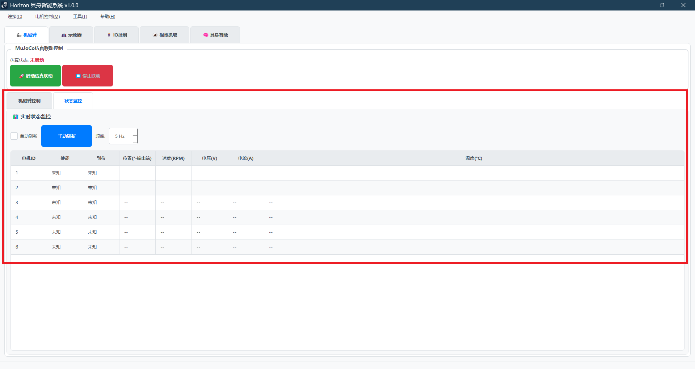
状态监控
MuJoCo 仿真联动¶
仿真功能：在页面顶部可"启动/停止"联动，便于在仿真中预演动作，提高操作安全性。
使用建议 - 机械臂控制功能较多 - 建议先用"单电机控制"测试每个关节 - 确认正常后再进行整臂控制

MuJoCo 仿真
7. 电机参数设置¶
6轴运动方向参考标准¶
在调整电机参数之前，请先了解各轴的标准运动方向。以下是基于仿真系统的6轴机械臂标准运动方向，所有方向描述均以机械臂自身为参考坐标系：
1轴（基座旋转）- 正方向参考

1轴正方向：基座逆时针旋转（以机械臂自身坐标系为准）
2轴（大臂摆动）- 正方向参考

2轴正方向：大臂向下摆动（以机械臂自身坐标系为准）
3轴（小臂摆动）- 正方向参考

3轴正方向：小臂向下摆动（以机械臂自身坐标系为准）
4轴（腕部旋转）- 正方向参考

4轴正方向：腕部右转（以机械臂自身方向为准）
5轴（腕部俯仰）- 正方向参考

5轴正方向：腕部向下俯仰（以机械臂自身坐标系为准）
6轴（末端旋转）- 正方向参考
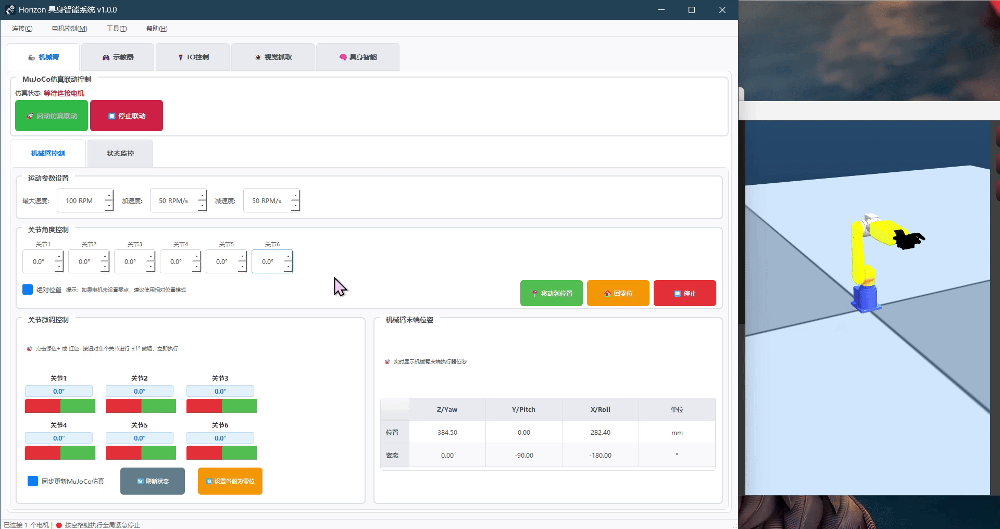
6轴正方向：末端右转（以机械臂自身方向为准）
重要提示：如果您的机械臂某个轴的运动方向与上述参考方向相反，请按照下面的参数配置方法进行调整。
参数配置¶
访问方式 - 菜单：工具 → 电机参数设置
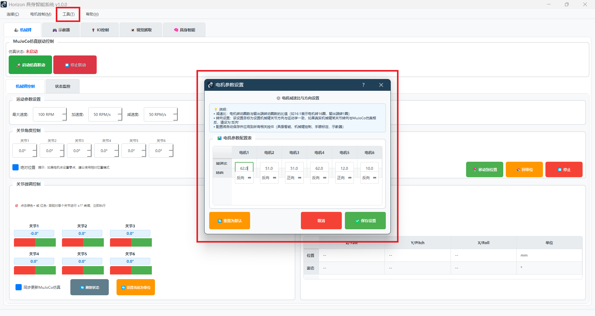
电机参数设置界面
默认参数配置¶
减速比设置¶
各关节电机的默认减速比配置：
| 电机ID | 关节名称 | 默认减速比 | 说明 |
|---|---|---|---|
| 1 | 基座旋转 | 62.0 | 基座关节，需要较高精度 |
| 2 | 大臂摆动 | 51.0 | 大臂关节，承载较大负载 |
| 3 | 小臂摆动 | 51.0 | 小臂关节，平衡精度与速度 |
| 4 | 腕部旋转 | 62.0 | 腕部关节，需要较高精度 |
| 5 | 腕部俯仰 | 12.0 | 腕部俯仰，需要较快响应 |
| 6 | 末端旋转 | 10.0 | 末端关节，需要快速调整 |
方向设置¶
各关节电机的默认方向配置：
| 电机ID | 关节名称 | 默认方向 | 数值 | 说明 |
|---|---|---|---|---|
| 1 | 基座旋转 | 反向 | -1 | 逆时针为正方向 |
| 2 | 大臂摆动 | 反向 | -1 | 向下摆动为正方向 |
| 3 | 小臂摆动 | 正向 | 1 | 向下摆动为正方向 |
| 4 | 腕部旋转 | 反向 | -1 | 右转为正方向 |
| 5 | 腕部俯仰 | 正向 | 1 | 向下俯仰为正方向 |
| 6 | 末端旋转 | 反向 | -1 | 右转为正方向 |
参数调整¶
减速比调整原则¶
- 高精度关节：基座、腕部旋转使用较高减速比（62.0）
- 负载关节：大臂、小臂使用中等减速比（51.0）
- 快速响应关节：腕部俯仰、末端旋转使用较低减速比（10.0-12.0）
方向调整方法¶
步骤1：测试当前方向
- 打开"单电机控制"页面
- 选择要测试的电机ID（1-6）
- 使能电机
- 设置小角度（如10°）进行正方向测试
- 观察实际运动方向
步骤2：对比参考标准
- 将实际运动方向与上述6轴方向参考GIF对比
- 确认是否与标准正方向一致
步骤3：调整方向参数
如果运动方向与参考标准相反：
- 进入"电机参数设置"
- 找到对应电机的方向设置
- 将方向从"正向"改为"反向"，或从"反向"改为"正向"
- 点击保存设置
步骤4：验证调整结果
- 返回"单电机控制"页面
- 点击"重新加载配置"
- 重新测试该轴的正方向运动
- 确认运动方向与参考标准一致
方向调整对照表
| 轴号 | 参考正方向 | 如果实际相反 | 调整方法 |
|---|---|---|---|
| 1轴 | 基座逆时针旋转 | 基座顺时针旋转 | 正向↔反向切换 |
| 2轴 | 大臂向下摆动 | 大臂向上摆动 | 正向↔反向切换 |
| 3轴 | 小臂向下摆动 | 小臂向上摆动 | 正向↔反向切换 |
| 4轴 | 腕部右转（机械臂自身方向） | 腕部左转 | 正向↔反向切换 |
| 5轴 | 腕部向下俯仰 | 腕部向上俯仰 | 正向↔反向切换 |
| 6轴 | 末端右转（机械臂自身方向） | 末端左转 | 正向↔反向切换 |
坐标系说明：所有方向判断均以机械臂自身坐标系为准，向上就是向上，向下就是向下，不受观察角度影响。
旋转方向说明： - 左转/右转：站在机械臂前方观察，左转就是向左旋转，右转就是向右旋转 - 机械臂自身方向：以机械臂本身的坐标系为准，不受观察者位置影响 - 这样的描述比"顺时针/逆时针"更直观易懂
参数保存¶
自动保存 - 参数修改后会自动保存到系统中 - 下次启动程序时会自动加载之前的设置
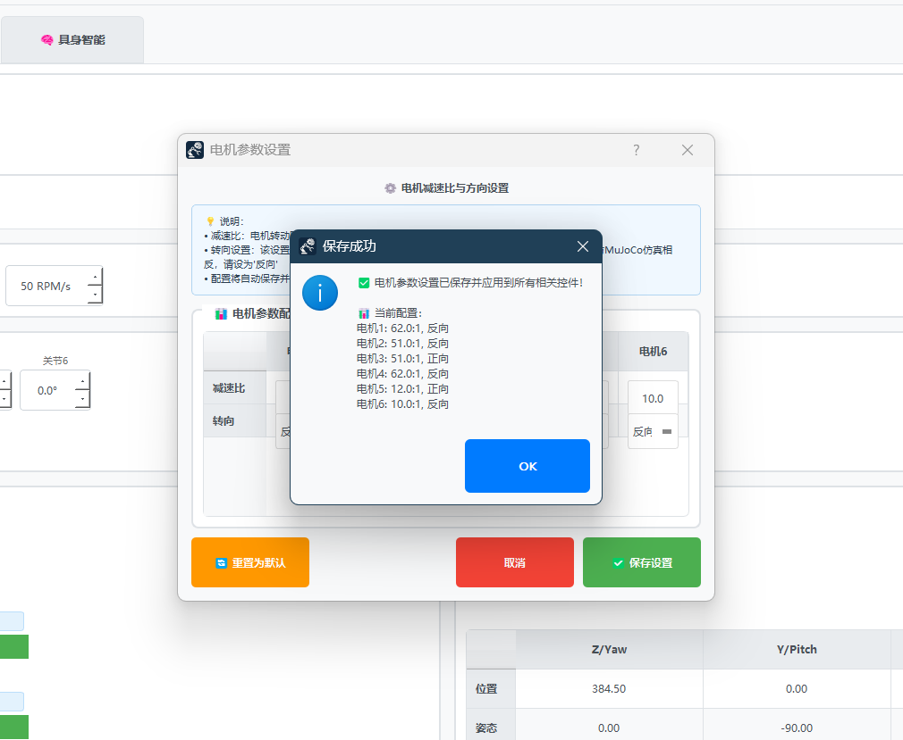
参数保存
应用范围¶
自动应用模块
- 保存后自动应用到相关页面：
- 单电机控制
- 机械臂控制
- 示教器
- 具身智能
- 视觉抓取
- 其他相关功能模块
应用新参数 - 修改参数后，需要在相关功能页面点击"重新加载配置" - 或重启程序使新参数生效
使用建议¶
调试流程
-
逐个测试：逐个关节测试运动方向和速度
-
小幅调整：每次只调整一个参数，观察效果
-
验证效果：确认调整后的参数符合预期
常见问题
-
运动方向错误：调整对应电机的方向参数
-
运动速度异常：检查减速比设置是否正确
-
精度不足：适当增加减速比
-
响应过慢：适当减少减速比
8. 示教器¶
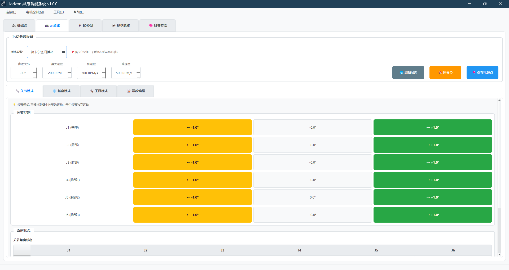
示教器
控制模式¶
支持三种控制模式的智能示教系统，可录制和回放复杂动作序列。
关节模式 - 直接控制每个关节的角度 - 精确的关节级控制
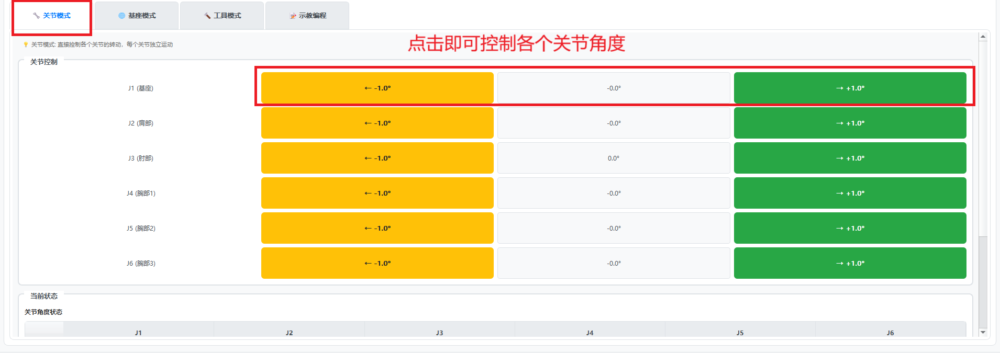
关节模式
基座模式 - 以基座坐标系为参考进行控制 - 全局坐标系操作
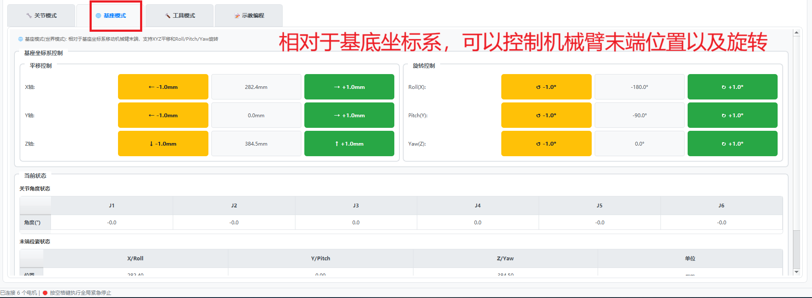
基座模式
工具模式 - 以末端工具坐标系为参考进行控制 - 工具坐标系操作
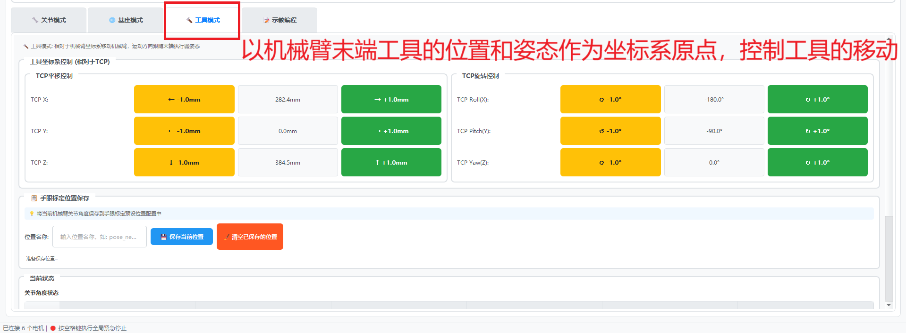
工具模式
示教编程¶
轨迹录制 - 在各种模式下录制机械臂动作点 - 支持多点轨迹记录
动作回放 - 按顺序回放录制的动作序列 - 精确复现示教动作
参数调节 - 速度参数调整 - 加速度参数设置 - 插补类型选择
程序管理 - 保存示教程序 - 加载历史程序 - 编辑程序内容

示教编程
插补类型¶
关节空间插补 - 在关节角度空间进行平滑过渡 - 保证关节运动的连续性
笛卡尔空间插补 - 在直角坐标空间进行直线插补 - 支持圆弧插补功能
动态参数¶
运动参数 - 根据驱动板类型（X/Y版）自动调整 - 根据插补类型优化参数
速度控制 - 支持线性速度独立设置 - 支持角速度独立设置
安全设置 - 自动限位检查 - 碰撞保护机制
提示：示教编程支持复杂的多点轨迹录制，适合重复性任务自动化
9. 视觉抓取¶
核心功能¶
集成双目深度估计的智能视觉抓取系统，实现精确的目标检测和定位。
实时图像显示 - 640x480固定分辨率 - 确保抓取精度 - 支持双目相机同步显示
深度估计 - 双目视觉模式（自动计算深度） - 固定深度模式（手动设置深度值） - 实时深度图显示
目标检测 - HSV颜色阈值检测 - 圆形检测算法 - 二维码检测 - 最小外接矩形检测
坐标转换 - 鼠标点击位置转换 - 转换为机械臂坐标 - 支持手眼标定矩阵
智能抓取 - 自动规划抓取轨迹 - 夹爪控制 - 姿态自适应调整
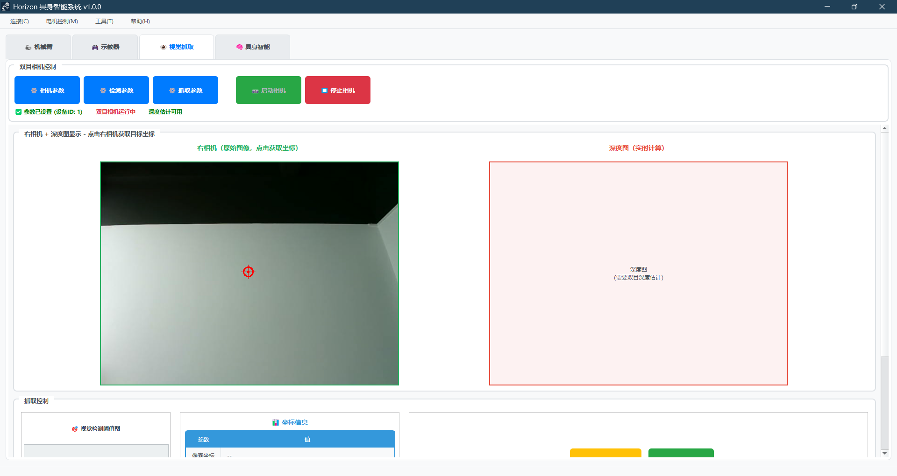
视觉抓取
操作流程¶
1. 连接相机 - 确保相机设备正常连接 - 设置相机设备ID（默认：0） - 检查设备状态
2. 标定系统 - 完成相机标定（获取内参和畸变系数） - 完成手眼标定（建立相机与机械臂坐标系关系）
3. 设置参数 - 调整检测参数 - 配置抓取参数 - 设置深度估计参数
4. 目标检测 - 在实时图像中识别目标对象 - 验证检测效果 - 查看检测结果
5. 执行抓取 - 点击目标执行抓取 - 或自动执行抓取动作 - 监控抓取过程

配置参数启动相机
参数配置¶
视觉检测参数¶
颜色检测参数 - HSV下限阈值：(0, 100, 100) - 色调/饱和度/明度的最小值 - HSV上限阈值：(10, 255, 255) - 色调/饱和度/明度的最大值 - 最小检测面积：500像素 - 过滤小目标 - 调整方法：根据目标颜色调整H值，根据光照调整S和V值
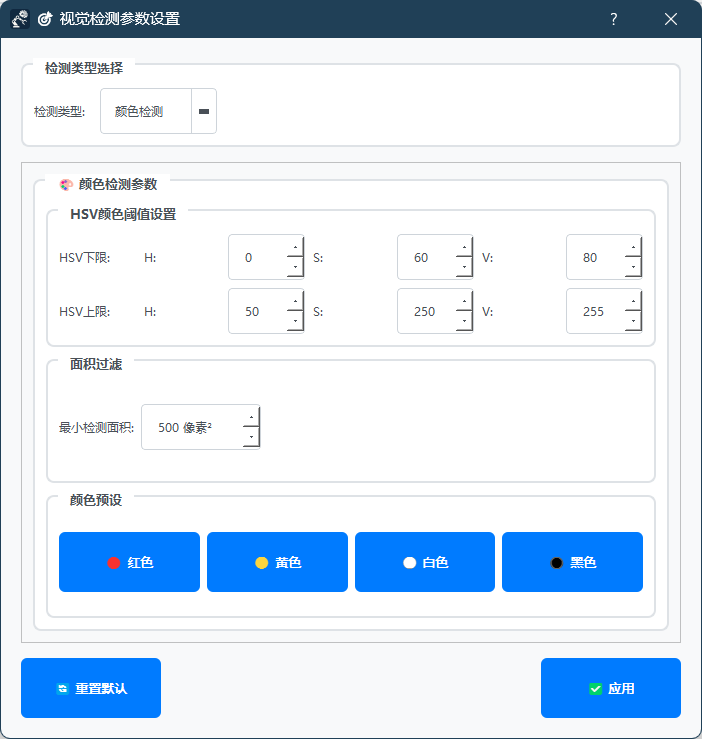
视觉检测参数-颜色
圆形检测参数 - 累加器分辨率：1.2 - 检测精度，值越小越精确 - 圆心最小距离：20像素 - 避免重复检测 - Canny高阈值：100 - 边缘检测敏感度 - 累加器阈值：30 - 圆形判定阈值，值越小检测越多 - 最小半径：5像素 - 最大半径：200像素
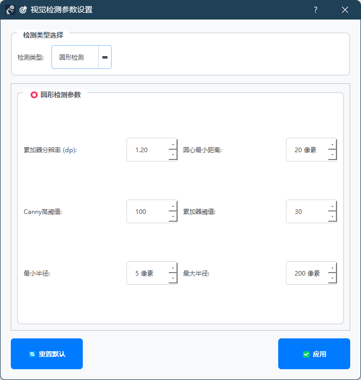
视觉检测参数-圆形
二维码检测参数 - 自动检测QR码和条形码 - 支持多种编码格式
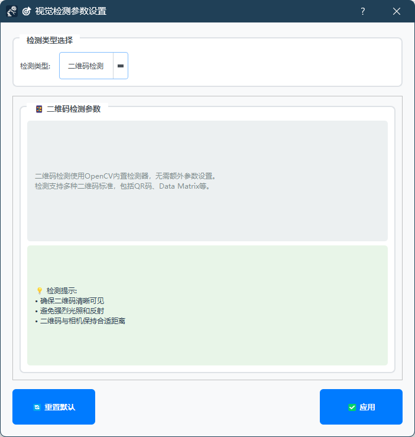
视觉检测参数-二维码
🤖 抓取控制参数¶
末端姿态设置（欧拉角） - Yaw角：0.0° - 绕Z轴旋转（航向角） - Pitch角：0.0° - 绕Y轴旋转（俯仰角） - Roll角：180.0° - 绕X轴旋转（翻滚角） - 姿态模式： - 固定姿态：使用设定的固定欧拉角 - 动态姿态：Yaw角跟随目标旋转，Pitch/Roll使用设定值
运动参数 - 运动速度：100 - 机械臂运动速度（单位：度/秒或毫米/秒） - 运动加速度：200 - 机械臂加速度参数
TCP修正参数（毫米） - X轴偏移：0.0mm - 工具中心点X方向修正 - Y轴偏移：0.0mm - 工具中心点Y方向修正 - Z轴偏移：0.0mm - 工具中心点Z方向修正
夹爪控制参数 - 张开角度：0.0° - 夹爪完全张开时的角度 - 闭合角度：90.0° - 夹爪完全闭合时的角度
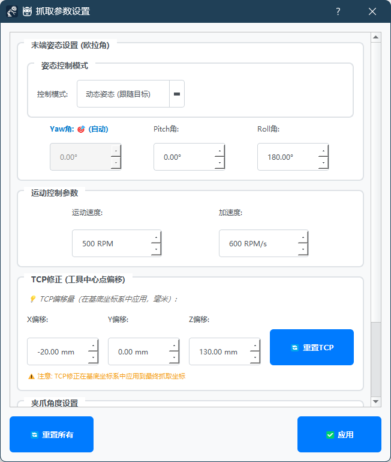
抓取控制参数
深度估计参数¶
固定深度模式 - 固定深度值：300.0mm - 当无法进行双目深度估计时使用
双目深度参数 - 最小视差：0 - 深度计算的起始值 - 视差范围：128 - 深度检测的范围 - 匹配精度：5 - 影响深度计算的精确度 - 可靠性要求：10 - 深度数据的可靠性检查 - 调整建议： - 视差范围：增大可检测更近的物体 - 匹配精度：增大可减少噪声，但会降低细节 - 可靠性要求：增大可减少错误的深度数据
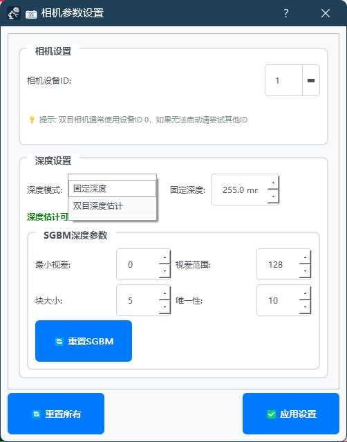
深度估计参数
使用技巧¶
参数调整建议
-
光照条件：确保光照均匀，避免强烈阴影
-
颜色检测：调整颜色参数时，H值控制颜色种类，S值控制颜色鲜艳度，V值控制亮度
-
深度精度：双目相机距离越远，深度测量越准确
-
抓取成功率：正确的工具偏移和姿态设置很重要
常见问题解决 - 检测不到目标：调整颜色阈值范围 - 深度不准确：重新进行双目标定或调整深度参数 - 抓取位置偏移：检查手眼标定精度和工具偏移设置
提示：视觉抓取需要完成相机标定和手眼标定才能获得最佳精度。建议在固定光照条件下进行标定和使用。
10. 具身智能¶
执行模式¶
通过自然语言指令控制机械臂，支持流式执行和传统执行两种模式。
流式执行 - 边解析边执行 - 响应更快 - 适合简单任务
传统执行 - 完整解析后执行 - 更稳定可靠 - 适合复杂任务
功能特性¶
文本输入 - 支持复杂的自然语言指令 - 智能指令解析
语音控制 - 语音识别转文本执行 - 实时语音处理
视觉问答 - 结合摄像头画面进行智能对话 - 视觉理解能力
任务队列 - 支持多任务排队 - 任务管理功能
紧急停止 - 集成全局紧急停止机制 - 安全保障
配置AI服务¶
⚠️ 重要提示：软件不包含具身智能部分的API密钥，您需要自行获取。
支持的AI平台 - 🔷 阿里云通义千问（Alibaba Qwen） - 🔷 DeepSeek深度求索
获取API密钥
软件不包含内置的AI服务API密钥，您需要：
- 自行注册对应平台账号
- 获取API密钥
- 在软件中配置您的密钥
详细配置教程：请查看 AI API配置指南，其中包含： - 阿里云通义千问注册与API获取教程 - DeepSeek平台注册与API获取教程 - 配置文件详细说明 - 使用技巧与最佳实践 - 常见问题解决方案
使用方法¶
1. 配置AI服务 - 参考 AI API配置指南 获取API密钥 - 在"具身智能"标签页设置LLM提供商 - 配置您的API密钥 - 选择合适的模型
2. 选择执行模式 - 流式执行模式 - 传统执行模式
3. 输入指令 - 文字输入任务指令 - 语音输入任务指令
4. 监控执行 - 观察任务执行过程 - 查看执行结果
5. 紧急停止 - 必要时使用空格键紧急停止 - 确保操作安全
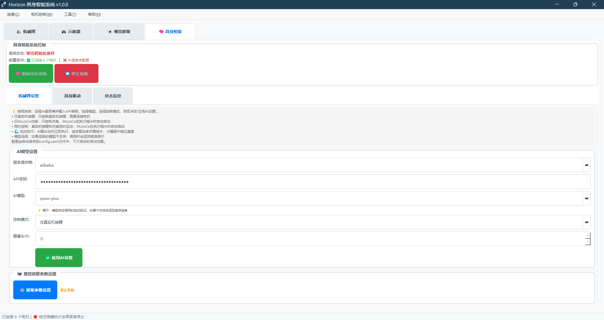
具身智能系统
注意事项¶
使用前准备 - 首次使用需完成AI服务配置（获取API密钥） - 确保网络连接稳定 - 建议先阅读 AI API配置指南
执行建议 - 复杂任务建议使用传统执行模式 - 简单任务可使用流式执行模式
成本控制 - API调用会产生费用，请注意用量 - 建议在测试阶段使用较小的max_tokens参数 - 定期检查平台的使用统计和费用
11. 相机与标定¶
💡 重要提示：视觉标定是系统的核心功能，详细的标定步骤和技巧请参考 视觉标定详解指南。
标定工具入口¶
相机标定 - 菜单：工具 → 相机标定 - 功能：获取相机内参和畸变系数 - 建议：采集15-20张不同角度的棋盘格图像
手眼标定
- 菜单：工具 → 手眼标定
- 功能：建立相机与机械臂坐标系的变换关系
- 建议：采集≥10个不同姿态的标定点
详细标定指南¶
完整标定流程请查看： - 📖 视觉标定详解指南 - 包含详细步骤、参数优化、常见问题解决
标定质量直接影响：
- 视觉抓取精度
- AI场景理解准确度
- 智能控制效果
建议：首次使用前务必完成高质量的标定，这是获得最佳使用体验的关键。
12. Joy-Con 手柄控制¶
核心功能¶
支持使用 Nintendo Switch Joy-Con 手柄直观控制机械臂，提供沉浸式的操作体验。
控制模式 - 笛卡尔模式：直接控制末端位置和姿态 - 关节模式：精确控制各个关节角度 - 一键切换：灵活适应不同操作场景
主要特性 - 🎮 双手柄协同：左右手柄分工明确，操作直观 - ⚡ 实时响应：50Hz高频控制，运动流畅 - 🎯 精确控制：微调模式+速度调节，精度可控 - 🛑 安全保护：紧急停止、速度限制等安全机制
快速入门 - 📖 完整指南：详细的操作说明请参考 Joy-Con手柄控制指南 - 🎮 按键映射：笛卡尔模式和关节模式的完整按键说明 - 💡 使用技巧：提高操作效率的实用技巧
应用场景 - 现场演示和展示 - 快速示教编程 - 灵活的手动操作 - 教学培训场景
硬件要求 - Nintendo Switch 左右 Joy-Con 各一个 - 电脑蓝牙功能（内置或外置适配器） - Windows 10/11 系统

手柄控制位置

手柄控制界面
提示：手柄控制功能需要先配对 Joy-Con，详细配置和使用方法请查看专门的手柄控制指南。
13. ROS2控制平台¶
核心功能¶
本系统还提供基于ROS2的高级控制平台，为专业用户提供更强大的控制能力。
分布式控制 - 多节点协作架构 - 话题通信机制 - 服务调用接口
运动规划 - 集成MoveIt2路径规划 - 智能避障算法 - 轨迹优化
可视化仿真 - RViz 3D仿真环境 - 实时轨迹显示 - 交互式调试
编程接口 - 标准ROS2话题接口 - 服务调用接口 - 参数配置系统
📦 快速访问¶
资源链接 - 📦 ROS2仓库：https://github.com/RuXue-one/Horizon_ARM_ROS2 - 📚 详细文档：请参阅「ROS2控制平台」文档
主要特性¶
架构优势
-
模块化架构：清晰的分层设计，易于理解和扩展
-
多控制模式：支持直接控制、话题通信、运动规划
-
完整可视化：集成MoveIt2和RViz的3D仿真环境
-
实时控制：高频率实时控制和轨迹跟踪
14. IO控制系统¶
核心功能¶
IO控制系统是Horizon具身智能机械臂的外部信号交互模块，通过ESP32微控制器实现数字输入(DI)和数字输出(DO)的控制，支持外部设备触发机械臂作业执行和机械臂状态输出。
主要特性
-
外部信号触发：通过DI信号自动触发预设作业
-
设备联动控制：通过DO信号控制外部设备
-
生产线集成：支持与生产线设备的信号交互
-
ESP32微控制器：稳定可靠的硬件控制平台
硬件配置¶
数字输入(DI)
-
8路数字输入：DI0-DI7
-
GPIO引脚：23, 22, 17, 16, 21, 19, 18, 5
-
支持上升沿、下降沿、高电平、低电平触发
-
内部上拉电阻配置
数字输出(DO)
-
8路数字输出：DO0-DO7
-
GPIO引脚：2, 4, 25, 26, 27, 32, 33, 13
-
3.3V输出电平
-
支持手动控制和程序控制
使用流程¶
1. 连接ESP32
-
选择正确的串口（波特率115200）
-
点击"连接"按钮建立通信
2. 配置IO映射
-
添加DI映射：设置触发方式和关联作业
-
添加DO映射：配置输出控制
-
保存配置文件
3. 创建作业
-
创建普通作业或导入示教程序
-
添加关节运动、夹爪控制、等待、IO控制等步骤
-
保存作业到配置文件
4. 外部控制模式
-
进入外部控制模式
-
系统监控DI状态变化
-
自动执行对应作业
应用场景¶
生产线集成
-
传感器信号触发抓取动作
-
完成信号输出给下游设备
-
多工位协调控制
自动化流程
-
按钮触发示教程序执行
-
状态指示灯控制
-
设备启停信号联动
详细说明：完整的IO控制系统操作指南请参考 IO控制系统操作说明
15. 数字孪生（可选）¶
仿真功能¶
功能说明 - 如版本提供"数字孪生"页面 - 可在软件内直接查看仿真 - 支持滑块交互操作 - 无需命令行操作
使用优势 - 直观的3D仿真界面 - 实时交互控制 - 简化操作流程
3D仿真
16. 全局安全：紧急停止（必读）¶
全局紧急停止系统¶
Horizon ARM 1.3版本配备了完整的全局紧急停止系统，确保在任何情况下都能快速停止所有运动。
触发方式¶
快捷键操作 - 在任意界面按空格键（Space） - 快速响应，即时生效
智能识别 - 系统自动识别当前焦点 - 避免在输入框中误触发 - 智能判断操作环境
全覆盖保护 - 覆盖所有子系统和运动控制 - 确保全面安全保护
停止范围¶
全局紧急停止会依次停止以下系统：
1. 示教程序线程 - 停止正在执行的示教程序 - 中断程序执行流程
2. 多电机循环控制 - 停止所有循环运动 - 终止循环控制逻辑
3. 具身智能系统 - 停止任务队列 - 停止执行线程
4. 所有电机运动 - 尝试紧急停止 - 失败则降级为普通停止
安全特性¶
防误触发 - 在文本输入框中按空格不会触发 - 在数字输入框中按空格不会触发 - 智能环境识别
状态反馈 - 实时显示停止结果 - 显示电机状态信息 - 提供操作反馈
错误处理 - 即使部分电机停止失败 - 也会继续处理其他电机 - 确保最大程度保护
快速响应 - 整个停止过程在毫秒级完成 - 极速响应保障安全
使用建议¶
硬件保护 - 建议配备物理急停按钮作为硬件保护 - 双重安全保障
软件补充 - 空格键软件急停作为便捷补充 - 随时随地可用
定期测试 - 定期测试紧急停止功能 - 确保功能有效性
重要提示：紧急停止是最重要的安全功能，使用前务必熟悉操作方法
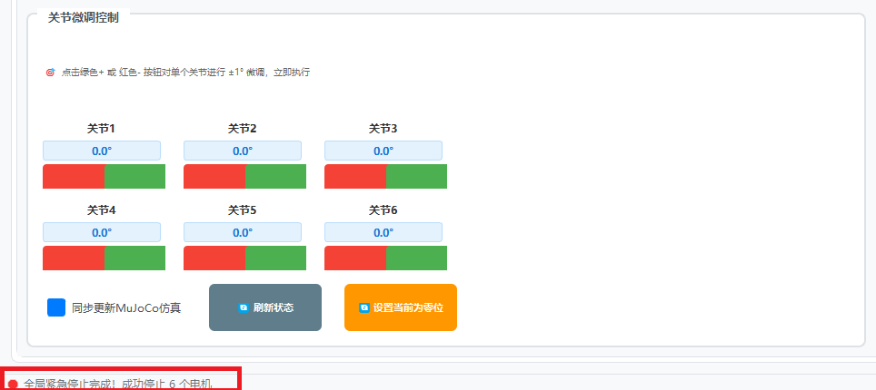
17. 单电机控制¶
基础控制¶
适合先验证通信与基础动作。
基本步骤 - 菜单"电机控制 → 单电机控制"或 Ctrl+1 打开 - 窗口中选择要控制的电机ID
常用操作
- 使能/失能
- 停止
- 位置控制（绝对/相对）
- 速度控制
- 力矩/电流设置
- 读取状态（位置、速度、温度、电压、电流、到位状态等）
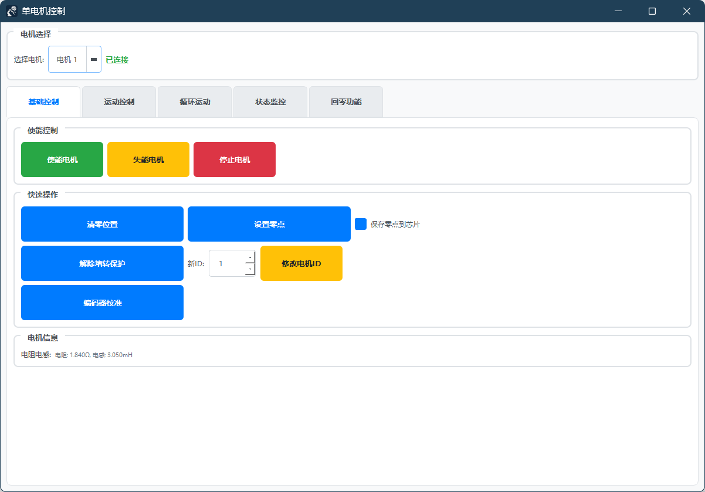
单电机控制
🔄 循环运动配置¶
动作步骤设置 - 可配置 5 步动作序列 - 每步包含以下参数： - 位置角度设置 - 最大速度配置 - 加速度参数 - 减速度参数 - 运动方向（CW/CCW） - 绝对/相对位置模式
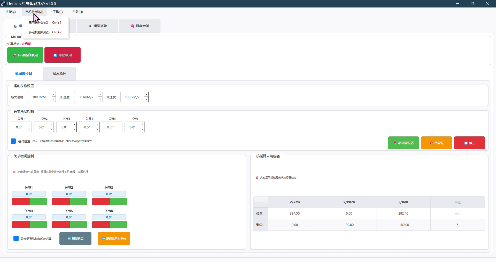
单电机循环
默认循环动作参数¶
| 步骤 | 位置角度(°) | 最大速度(RPM) | 加速度(RPM/s) | 减速度(RPM/s) | 方向 | 位置模式 |
|---|---|---|---|---|---|---|
| 1 | 360.0 | 500.0 | 1000 | 1000 | CW | 相对位置 |
| 2 | 360.0 | 600.0 | 1200 | 1200 | CCW | 相对位置 |
| 3 | 180.0 | 700.0 | 1400 | 1400 | CW | 相对位置 |
| 4 | 180.0 | 800.0 | 1600 | 1600 | CCW | 相对位置 |
| 5 | 90.0 | 500.0 | 1000 | 1000 | CW | 相对位置 |
参数说明¶
位置角度 - 单位：度(°) - 相对位置：相对于当前位置的移动角度 - 绝对位置：移动到指定的绝对角度位置
速度参数 - 最大速度：电机运行的最高转速(RPM) - 建议范围：100-1000 RPM - 过高可能导致失步，过低影响效率
加速度参数 - 加速度/减速度：电机启动和停止的加速度(RPM/s) - 建议范围：500-2000 RPM/s - 影响运动的平滑性和响应速度
运动方向 - CW：顺时针方向 - CCW：逆时针方向 - 实际方向受电机方向参数影响
时间控制 - 动作间隔时间：默认1000ms - 可设置每个动作之间的等待时间 - 点击"开始循环运动"后按顺序执行
安全控制 - 随时可"停止循环" - 支持"紧急停止"功能 - 空格键全局紧急停止
使用技巧¶
参数调整建议
-
首次使用：使用默认参数进行测试
-
速度调整：根据负载和精度要求调整速度
-
加速度调整：根据机械特性调整加速度
-
角度设置：根据实际应用需求设置运动角度
安全注意事项 - 首次运行前检查机械臂工作空间 - 确保没有障碍物阻挡运动路径 - 准备随时使用紧急停止功能
安全提示：建议先小角度、低速度进行验证；异常情况请立即停止。
使用建议 - 先做小角度、低速度动作 - 确认方向/减速比设置正确
18. 多电机控制¶
同步控制¶
面向同步/批量操作。窗口包含"同步控制 / 批量操作 / 循环控制 / 回零参数设置 / 状态监控"等标签。
常用场景
同步控制 - 为多台电机设置目标（直通/梯形/速度等） - 发送带同步标志命令 - 系统自动处理同步触发信号
批量操作 - 批量使能/失能 - 批量停止
循环控制 - 配置每台电机的动作序列，循环执行
状态监控 - 周期读取各电机状态，显示是否在线、当前角度/速度等
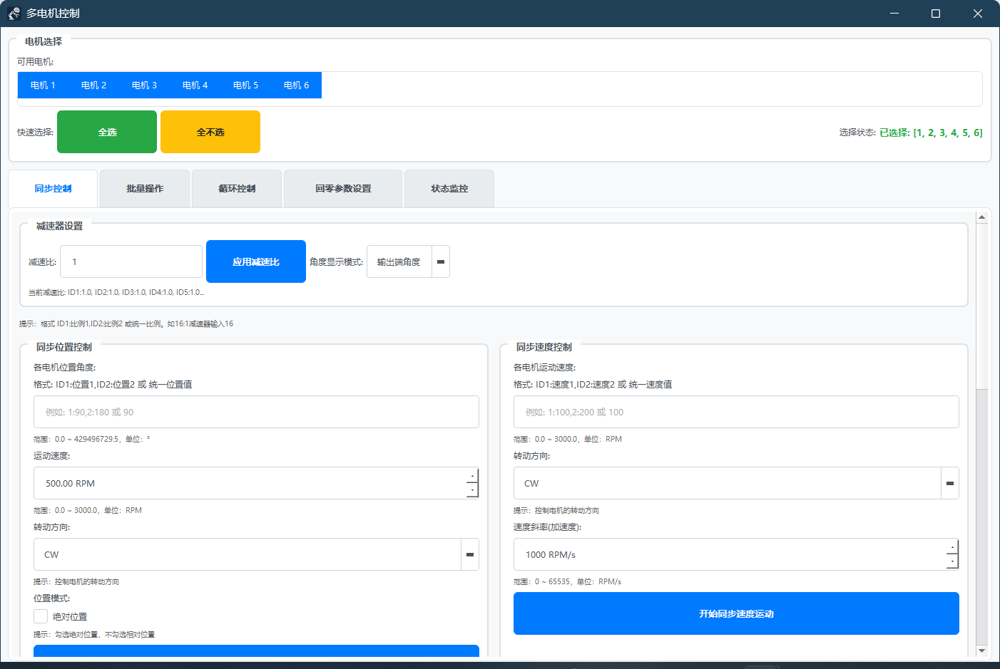
多电机控制
多电机循环控制默认参数¶
每个电机的默认循环动作配置：
| 步骤 | 位置角度(°) | 最大速度(RPM) | 加速度(RPM/s) | 减速度(RPM/s) | 方向 | 位置模式 |
|---|---|---|---|---|---|---|
| 1 | 45.0 | 800.0 | 400 | 400 | CW | 相对位置 |
| 2 | 45.0 | 800.0 | 400 | 400 | CCW | 相对位置 |
| 3 | 45.0 | 800.0 | 400 | 400 | CCW | 相对位置 |
| 4 | 45.0 | 800.0 | 400 | 400 | CW | 相对位置 |
| 5 | 0.0 | 800.0 | 400 | 400 | CW | 绝对位置 |
同步控制说明¶
同步原理 - X版：同步标志 + 广播触发模式 - Y版：多电机命令一次性下发模式 - 确保多电机协调运动
同步设置步骤
-
连接电机：确保所有目标电机已正确连接
-
使能电机：批量使能所有参与同步的电机
-
设置目标：为每台电机设置运动目标参数
-
发送同步命令：系统自动处理同步标志和触发
-
监控执行：观察所有电机的同步运动状态
状态监控参数 - 刷新频率：默认100ms - 监控内容：位置、速度、温度、电压、电流 - 在线状态：实时显示电机连接状态 - 到位状态：显示电机是否到达目标位置
使用技巧¶
同步控制建议
-
预备工作：同步前确认所有电机已使能
-
参数检查：确保各电机参数设置合理
-
逐步测试：先进行小幅度同步测试
-
监控状态：实时观察电机状态和响应
故障排除
-
同步失败：检查电机ID是否唯一
-
运动不协调：检查各电机的减速比和方向设置
-
通信异常：检查CAN总线连接和波特率设置
小贴士 - 同步前确认所有电机已使能，且已成功读取过状态 - 同步失败时，优先检查 ID 是否唯一、是否设置了同步标志以及是否发送了广播触发 - 建议在同步控制前先用单电机控制验证各电机工作正常
19. 快捷键¶
连接相关¶
连接操作 - 连接电机：Ctrl+E - 断开连接：Ctrl+D
控制相关¶
控制功能 - 单电机控制：Ctrl+1 - 多电机控制：Ctrl+2 - 全局紧急停止：空格键（Space）
使用说明¶
通用快捷键 - F1/保存/打开等通用快捷键以当前 Windows/编辑器为准 - 本程序未绑定 Esc 急停功能 - 建议使用空格键进行紧急停止
20. 常见问题与排查¶
连接失败/无响应¶
检查项目 - 是否选对串口（设备管理器确认）？ - 波特率 500000、CAN 速率 500K 是否匹配？ - 电机是否上电、ID 唯一？ - 是否被其他程序占用串口（如 CANgaroo）？
多机同步不工作¶
检查项目 - 是否对每台电机发送了"带同步标志"的命令？ - 是否发送了广播同步触发（ID=0，00 FF 66 6B）？ - 所有电机是否都已使能且能读取状态？
状态读取不稳定¶
解决方法 - 检查 USB 线缆与接口 - 仅保留本程序占用 CAN/串口 - 降低读取频率（状态监控标签中调整）
位置角度异常/方向不一致¶
解决方法 - 在"电机参数设置"里校正减速比与方向 - 小范围、低速度试动，确认后再进行大幅度动作
数字孪生显示异常¶
解决方法 - 检查显卡/驱动兼容性 - 尝试更新或更换电脑
21. 快速参考¶
文档导航¶
入门文档
功能文档
-
📷 视觉标定详解 - 相机和手眼标定
-
🎮 Joy-Con手柄控制 - 手柄操作指南
-
🔌 IO控制系统 - 外部信号控制
-
🤖 AI API配置指南 - 获取和配置AI服务密钥
进阶文档
控制方式对比
| 控制方式 | 适用场景 | 优势 | 学习难度 |
|---|---|---|---|
| 软件界面 | 精确控制、参数调试 | 功能全面、参数可视化 | ⭐⭐ |
| Joy-Con手柄 | 演示、示教、灵活操作 | 直观、便携、响应快 | ⭐ |
| ROS2平台 | 研究开发、复杂规划 | 功能强大、扩展性强 | ⭐⭐⭐⭐ |
| IO控制 | 生产线集成、自动化 | 自动触发、设备联动 | ⭐⭐⭐ |
| 具身智能 | AI交互、自然控制 | 语言控制、智能理解 | ⭐ |
结语¶
使用建议¶
安全第一 - 先小角度、慢速度进行测试 - 多用空格键进行紧急停止 - 确保操作安全
循序渐进 - 从单电机控制开始熟悉 - 逐步掌握多电机同步 - 最后进行复杂任务操作
定期维护 - 定期检查连接状态 - 保持软件更新 - 备份重要配置
祝你使用顺利！ 🚀
Horizon Arm 用户指南 | 让机械臂使用更简单
© 2025 Horizon Arm • 智能、灵活、易用